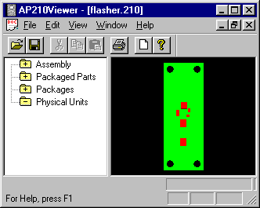

Filename:
IDF flasher.210
Author:
Kevin Cline
Title:
SurfaceMount Flasher design
Design Sources:
IDF Version 2.0
flasher.brd
flasher.lib
Mentor Graphics BoardStation
SurfaceMountFlasherMGC.zip
UniGraphic LRU files (AP203)
ap203flasher_lru.tar.Z
Gerber Artwork Files:
SurfaceMountFlasherGerber.zip
Source Schema Date:
Mon Sep 4 18:51:43 EDT 2000
Validation Schema Date:
Mon Sep 4 18:51:43 EDT 2000
Conformance Class:
Recommended Practice Reference:
Translator:
IDF to AP210 Translator 11/13/00
PostProcessing:
None
Test Purpose:
A real design available to share.
Applicable Rules Clauses:
SEDS (Step Enhancement and Descripency System):
N/A
Description:
This board uses surface mount parts. Both IDF and
MentorGraphic Boardstation designs are available.
Supporting Graphic:

Figure 1: Primary Surface View
Testing History: